Music!
For my Youtube channel, please click here.For my MySpace account, please click here.
My Gear
Trombone:
Conn Tenor Trombone Director 22H - unknown year
Guitars:
Jackie - Jackson Pro Series Dinky DK2M Transparent Black - Japan 2007
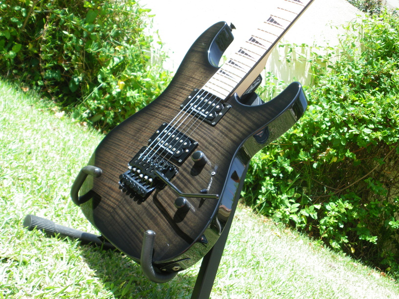
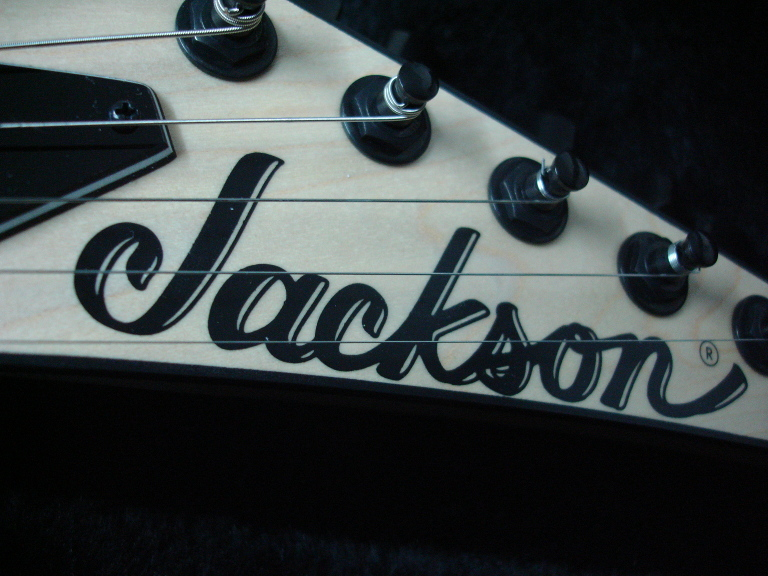
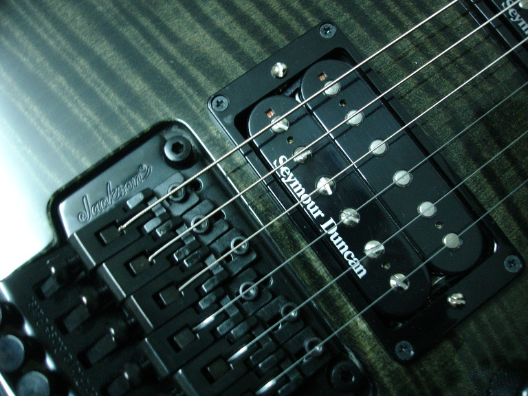
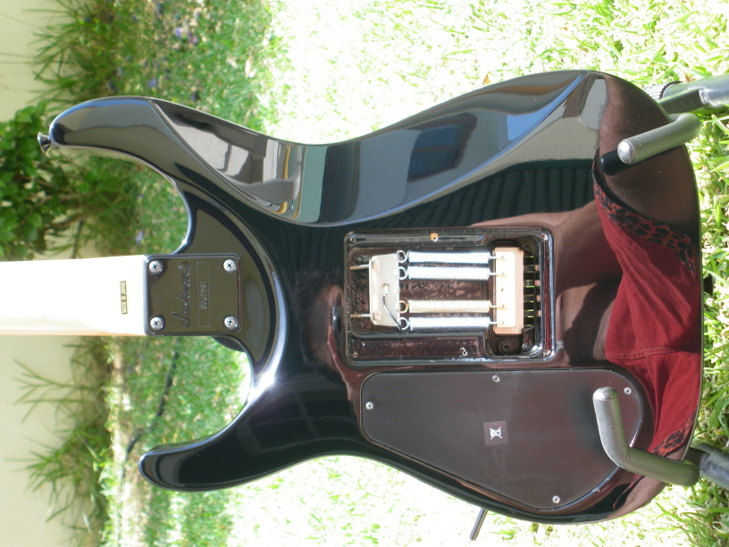
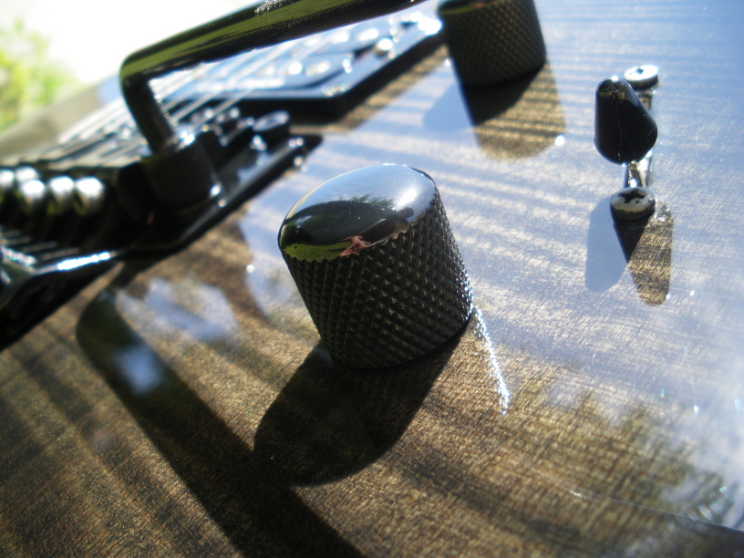
Fiona - Squier Stratocaster Standard Edition - China 2003
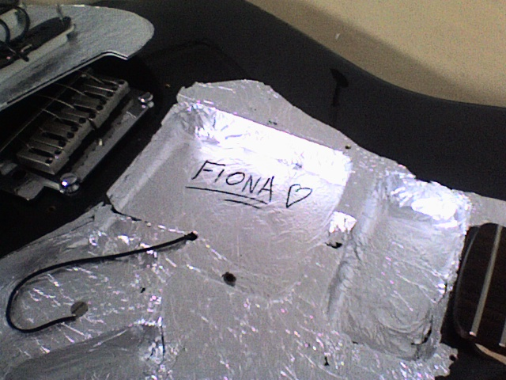
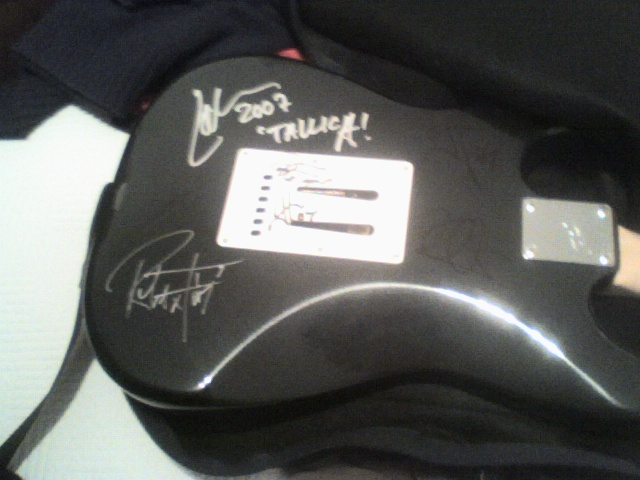
.jpg)
{kind=link}
{kind=link}
{kind=link}
{kind=link}
{kind=link}
{kind=link}
{kind=link}
Amplifiers:
Marshall EL84 20/20 Stereo Amplifier - unknown year
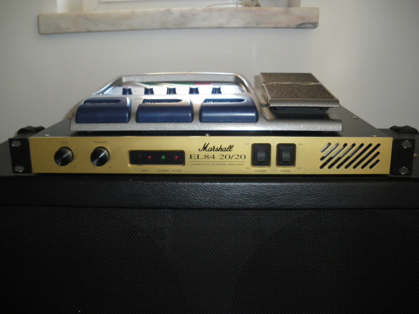
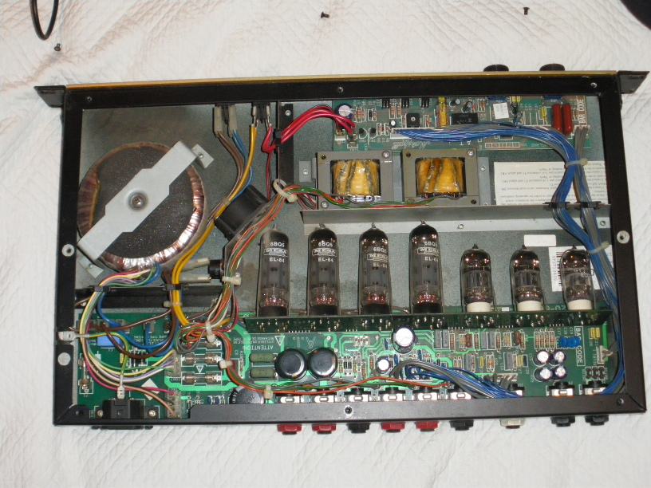
Caixa de Fósforos - Fender Frontman II 15R - 2003
{kind=link}
{kind=link}
Effects:
Digitech RP300A guitar processor pedal - unknown year
Cabinets:
Line 6 Spider 412 with Custom Celestions Speakers - unknown year
Strings:
A lot of different brands and gauges: Elixir, D'Addario, Rotosound, Fender, GHS and NGS.. anything between .010 and .050
Currently, Elixir Nanoweb .010 - .046
Acessories:
The Mojo Pick - Priceless Custom Made Brass Pick with Hand Engraved Mojo and flames on the backside - 2010
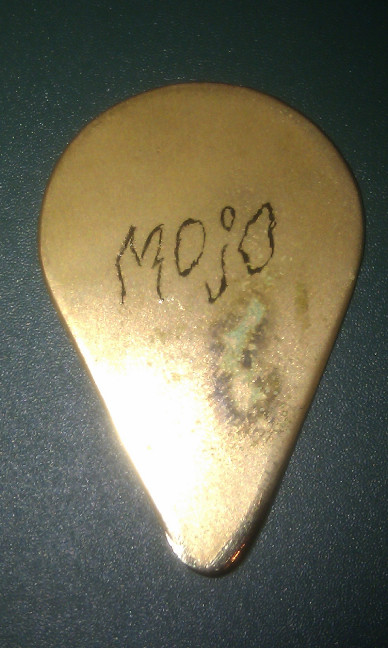
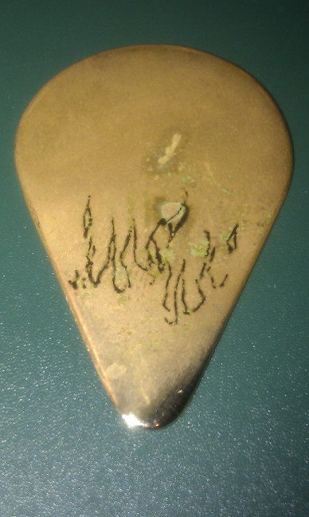
Levy's Leather Strap - 2009
{kind=link}
{kind=link}
Cables:
Digitech Pro-Cable
a lot of Take-no-Prisioners-Cables aka the shitty cables
Recording Stuff:
M-Audio Profire 2626 Firewire Interface - 2009
Shure SM-57 - 2009
This whole webpage was built using nothing more than Free Software.
Don't ever try to argue with me about my awesome Debian Sid. I advice you to neither do it without being able to suffer the consequences.
Finally, props to my dear friend sanchaz, who hosts this page at no charge. Thanks.